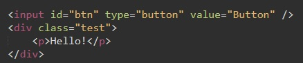
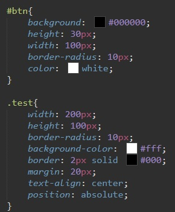
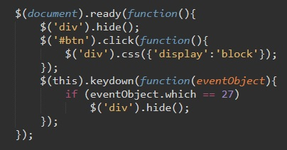

Hello!
У нас есть кнопка и окно
дадим немного стилей нашим элементам
Теперь рассмотрим код JS
C помощью библиотеки Jquery мы запускаем функцию, которая выполнится при загрузке окна ($(document).ready(function())
так же с помощью $ мы обращаемся к нашему блоку и скрываем его командой "$('div').hide();"
Далее мы обращаемся к кнопке и говорим что при нажатии будет выполнена фунция, которая даст параметру display значение block
Теперь самое главное. С помощью оператора this мы обращаемся к документу и отслеживаем событие "keydown" (нажатие кнопки на клавиатуре)
В качестве входного параметра мы принимаем значение "eventObject"
А дальше условный оператор: если объектом оказался обьект с номером 27 (это номер клавиши ESC), то выполняется действие, а именно мы снова скрываем наш блок DIV